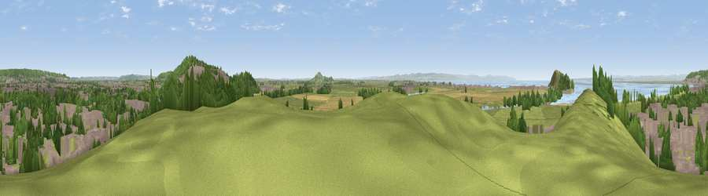

Viewpoint near Uphill
#7840 in England · top 25% of its area beats it · near UphillWhere it is
The exact computed spot (ST 31775 58275). Click the marker for map links.
The view, rendered

A 360° render of this exact spot computed from the terrain model, tree cover and land cover — summer colours, afternoon light, calibrated against photographs of famous viewpoints. Real trees, hedges and buildings will differ in detail.
The panorama
Grey silhouette: terrain skyline in each direction (720 bearings, Earth curvature and refraction included). Dashed green: skyline with trees (+15 m) and buildings (+8 m) as obstacles. Blue strip: how far the ground is visible on each bearing.
Where the view opens
Wedge length = distance to the farthest visible ground on that bearing (vegetation-aware). Rings at 10, 25 and 50 km.
What fills the view
38% grassland · 27% built-up · 19% woodland · 9% water · 6% cropland ·
Angular shares of the visible panorama (visual magnitude), not map area. Landscape diversity 0.64 (0–1 Shannon).
Key numbers
More beautiful places nearby
The staircase of upgrades: each row has a higher view potential than everything closer. Driving times are estimates from straight-line distance, calibrated against real road routing — check an actual route before setting out.
| Place | Direction | Drive | Score |
|---|---|---|---|
| Viewpoint near Uphill | WNW · 2 km | ~6 min | 72.3 |
| Viewpoint near Bleadon | E · 2 km | ~6 min | 77.7 |
| Bleadon Hill [Loxton Hill] | ESE · 5 km | ~11 min | 79.6 |
| Viewpoint near Holford | SW · 24 km | ~40 min | 80.8 |
| Viewpoint near East Quantoxhead | SW · 25 km | ~40 min | 83.1 |
| Viewpoint near Holford | SW · 25 km | ~40 min | 85.9 |
| Viewpoint near West Quantoxhead | SW · 25 km | ~41 min | 87.9 |
| Viewpoint near West Quantoxhead | SW · 26 km | ~42 min | 88.7 |
51.31947, -2.98039 · source: screening · position refined by local search. Computed location — check access rights before visiting.